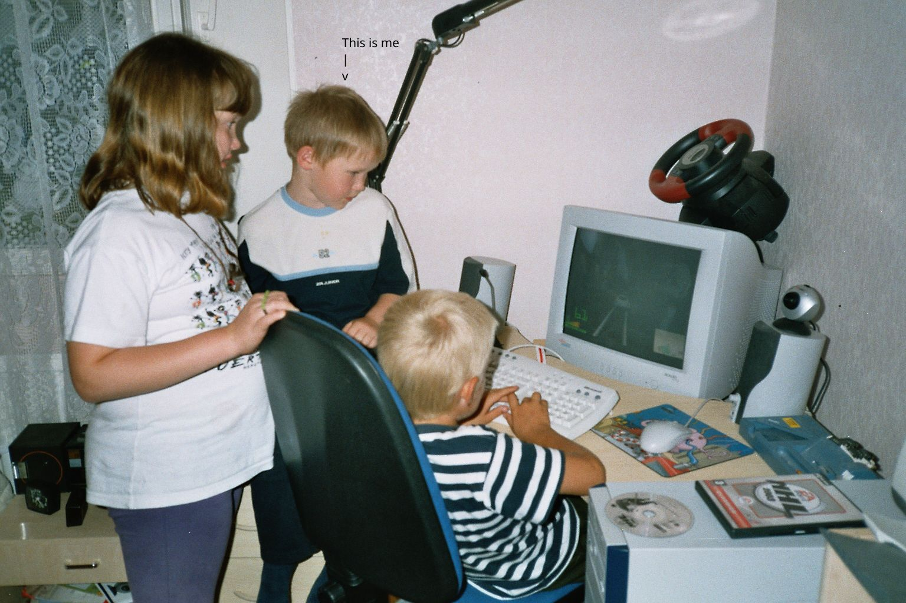
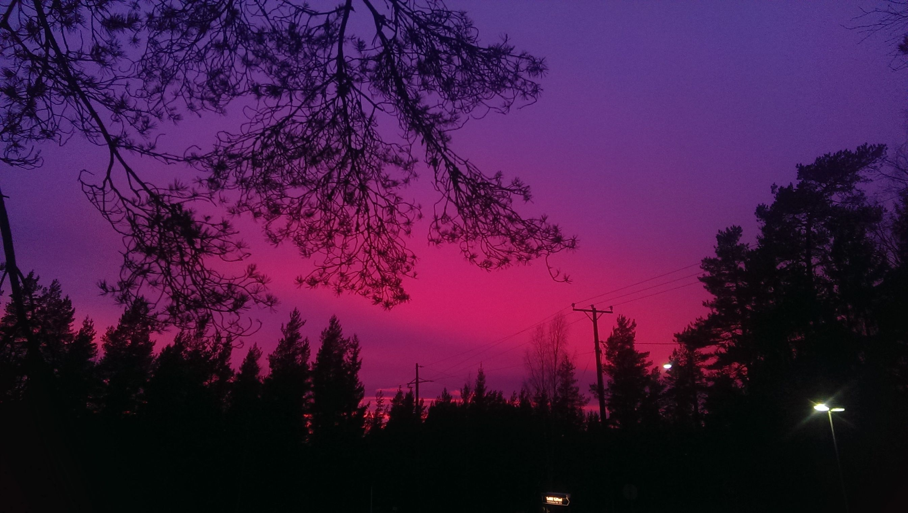
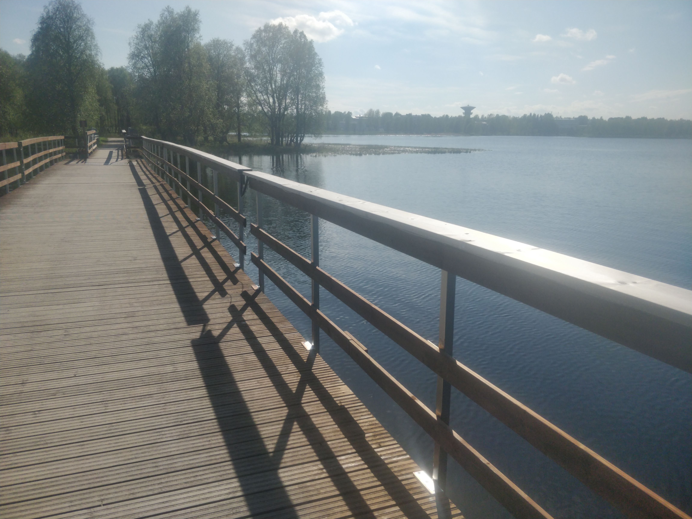

Table of Contents
- Biography
- 1990's
- 2000's
- 2010's
- Game Servers
- My second linux experience
- Technology world evolves
- 360 NoscopeZ
- Religion
- Theatre
- School's out
- My third & fourth linux experience. Also my first BSD experience
- Don't buy GPU's first
- Quake Live
- Super Smash Brothers Melee
- My first Rooted smartphone attempt
- Technical difficulties
- My fifth Linux experience & second BSD experience #2
- Warsow
- Programming inspiration
- Darker days
- No to smartphones
- OpenBSD in the picture
- Be careful who you back on Indiegogo, Kickstarter ..etc
- Raspberry Pi 3b
- You're in the army now (remember the song?)
- After military service
- Small media gig turned into a real mens job
- 2020's
Biography
I came into this world in the year of 1998. Same as the malbolge programming language. Our family always had a computer around, as far back as I can remember. That computer played a big role in shaping my path as a programmer today. I think many programmers can relate to having a similar childhood experience.
I'll be honest, most of what I'll be sharing is about nostalgia and talking a lot about video games. So, it might not be everyone's cup of tea. But hey, feel free to join me on this journey if you're up for it!
1990's
Ah, those years are a bit hazy for me. I was still in diapers back then. It was around the time when the first Matrix movie hit the screens, Half-Life made its debut, and game developers were starting to dive into the world of 3D environments.
2000's
Kindergarten

Figure 1: During my early years, I experienced the joy of my first video game: Midtown Madness 2. It was a thrill collecting CD-ROMs from cereal boxes with fellow kids. Soon after, we got our hands on NHL 2003 for PC, and I became obsessed with anything related to hockey. It's worth noting that NHL 2003 was released in late 2002, despite its name.
Console Adventures
My passion for gaming extended to consoles when I played PlayStation 2 at my neighbor's place. I used my 7th birthday money to purchase a PS2 Slim and Lego Star Wars. I didn't have any extra controllers or a memory card, but that didn't dampen my enthusiasm. I also discovered the captivating world of GTA Vice City and the unforgettable Sly Cooper franchise. Whether I played them in the intended order or not, these innocent platforming and racing games gradually transitioned into action-packed adventures around the mid-2000s. Games like James Bond Night Fire and Star Wars Battlefront II became staples of my gaming experience.
Although I initially believed I had outgrown consoles, the allure of Wii Sports Bowling, experienced at a friend's place, convinced me otherwise. I saw motion controls as the next big thing. I spent hours playing Wii Sports, Guitar Hero III, and Super Smash Bros Brawl. Now, let's settle the debate: PlayStation 2, released in 2000, remains the most influential console ever. In fact, my own PlayStation 2 and Wii consoles are still in working condition, allowing me to relive the memories of a younger version of myself singing nonsensical songs on SingStar, thanks to memory cards and homebrew magic
Of course, rest assured that I spent plenty of time outdoors too!
Internet
This period marked the arrival of internet in our household, and I found myself captivated by Counter-Strike. Initially, I played against bots, but before long, I ventured into the world of online play. Counter-Strike was a phenomenon among kids, and we all found our way to it through a site called Kivitie (which, by the way, has long disappeared). Yes, we were a bunch of young outlaws, but I think it's time to come clean about it.
As the internet became a significant part of my life, I discovered Habbo Hotel, MSN Messenger, and the enchanting realm of YouTube. I spent countless hours watching Lego projects, enjoying Machinima creations (anyone remember Leet World?), and following popular channels like RWJ and Smosh. It was also during this time that YouTube poop and its Finnish counterpart, Sinätuubapaska, emerged. While I didn't create my own flash games, I delved into Windows Movie Maker, Sony Vegas 7, and Sony Vegas Pro 8, channeling my inspiration from Counter-Strike and James Bond into stop motion Lego movies.
Ice Skating and More
In my early years, I quickly learned to skate on ice, and at the age of 7, my mother enrolled me in a hockey team. Hockey has always been my favorite sport, and for 5 years, I found my place as a goaltender after our team faced a shortage. Eventually, I decided to explore another passion and spent the next 5 years learning to play the guitar. However, my interest in skateboarding, inspired by games like Tony Hawk and Jet Set Radio Future, didn't last long. Nonetheless, during the summer months, baseball became my sport of choice. Surprisingly, our small town had a better baseball team than a hockey team!
My First Encounter with Linux
Somewhere around 3rd or 4th grade, during our weekly IT classes, I encountered computers dual-booting Windows with Ubuntu 8.04. While we couldn't fully grasp its potential as young children, I was particularly drawn to the Gnome 2 interface and its vibrant orange color scheme.
My First "Gaming" PC
In 2009, I was ecstatic to acquire my first "gaming" computer for €300. It consisted of an Athlon X2 250 with a stock cooler, a single stick of DDR3 2GB RAM, an HD 4570 (or something similar, though it was the first component to fail), a 1TB Western Digital Green HDD, and an ASRock M3A785GM-LE motherboard (arguably the ugliest ASRock motherboard ever made). I absolutely loved it!
Our family had a total of two computers to share: my sister's laptop and my trusty desktop PC. There might have been an extra one tucked away in the closet, but even back then, it was considered outdated. However, I still keep it intact, and with a decent graphics card, it should run just fine. Although these computers lacked OpenGL support, they still had their uses, even if they were quite power-hungry.
During this time, I obtained my first Steam account and immersed myself in Counter-Strike: Source. I also enjoyed playing Garry's Mod 9 because it was free. About a year later, I purchased a used account with Left 4 Dead 2 and Team Fortress 2 for a mere €10. CSS still holds the record for the most hours I've spent playing a game, ranging from 2000 to 3000 hours, with a significant portion devoted to "sauna" servers. Remarkably, as of 2023, a couple of servers are still running. It's a delightful experience to play with friends and engage in voice chats with strangers.
2010's

Game Servers
In 2010, when I was a 12-year-old kid playing Counter-Strike, I had my first exposure to coding through AMX Mod X scripts. AMX Mod X is for goldsrc games, while Sourcemod is for source games. Although I didn't understand much at the time, it was cool to be able to open files and see what was inside. Game hosting also taught me basic networking skills like gateways and ports, which turned out to be valuable. I was also intrigued by Ruby during that time, although it didn't lead to anything significant until 2022. I probably made some super basic webpages back then, as that's where many people start their coding journey, right?
My second linux experience
I had a vague interest in hacking culture during this time. I remember watching a presentation called "DEFCON 18: Pwned By The Owner: What Happens When You Steal a Hacker's Computer." It was one of the most entertaining talks I've ever seen. After that, I tried out Backtrack 4 livedvd, which is now known as Kali. I was just a kid and had no idea how to navigate the command line.
Technology world evolves
The early 2010s were a wild time. Smartphones and social media grew rapidly, sadly killing Flipnote Hatena for DSi. Let's plays and livestreaming became popular, many companies shifted to service models, and there were global surveillance disclosures. On a positive note, Finland won gold at IIHF 2011!
360 NoscopeZ
For a short period, I played Call of Duty, Halo, and other Xbox 360 titles with friends. Quickscoping and Zombies became a big part of my day. It was a routine to chat with strangers in Xbox 360 lobbies. I got a minecraft account too after trying it in my friends house. I had a lot of fun with it but i sold it soon after.
Religion
There was this youth center in the middle of a dead town that I'll always remember fondly. It had a cozy and warm atmosphere where people cried and laughed together. I never felt a strong connection to God or any religion, but I loved the sense of community there. It was the most fun time I've ever had, like being part of a tribe. Personally, I believe partying with drugs and alcohol doesn't come close to that experience. However, as we all got older, we moved to different places. Good luck to everyone, wherever they are now!
Theatre
One of my friends asked me to participate in a summer theatre production. I didn't have a major role, just one or two lines, but I went with it. It could be annoying spending so much time practicing for such a small part, but overall, I had fun. I even had a small relationship during that time. We celebrated my 18th birthday with a sauna and tequila.
School's out
Fast forward to 2014, I finished comprehensive school and studied Graphic Design in vocational school. Although it wasn't my intended career path, I wanted to learn the skill regardless of my future occupation. Unfortunately, my Photoshop skills didn't improve much during that time. I didn't learn to draw art, but I did spend time thinking about typography. I was more inclined towards digital design and didn't care much about print. However, the school focused solely on physical print projects like calendars, roll-ups, signs, shirts, and stickers, without considering web design. It was a challenging environment where motivation was lacking, but my first year was the most enjoyable due to the student community at the time.
Lesson learned: Using Windows XP for real work is a bad idea. I had some extra computer parts and decided to experiment. I love Windows XP because it reminds me of my childhood, but when I used it for magazine work with Adobe InDesign, it crashed and blue-screened a lot, especially under pressure.
Overall, those were some interesting times, exploring different aspects of design, playing games, and learning from both successes and failures.
My third & fourth linux experience. Also my first BSD experience
We had parties, and I managed to get a couple of old computers from people without spending any money. I did some small installation projects like creating a Tiny Linux laptop and a Pfsense router when I had networking issues, but i clearly lacked knowledge to get Pfsense working when i was 16.
I had a few experiences with Linux during that time. Steam was announced for Linux, and my stepbrother had a Linux Mint machine in his fathers place, but we didn't know how to use it properly. I found the whole "app store" way of installing applications weird, and I'm not a fan of the look of Linux Mint either. Maybe it's just my weird mentality.
Don't buy GPU's first
Lesson learned: Investing in GPUs is not a great idea. I bought a brand new GTX 770 without considering the other components I needed. I could only afford AMD's FX line of cpus. They're actually good bang for buck but i felt like this is too soon to put serious money in a computer. So i put the new computer build on hold for a long time. My gpu ended up collecting dust for years.
Quake Live
In 2014, I discovered Quake Live, an arena first-person shooter. It was a new experience for me, and I spent countless hours playing duel matches. Quake pros are hardcore, and the adrenaline rush was amazing. It's a challenging game that requires strategy, timing, and precise aiming. While it may be difficult for newcomers, with dedication, anyone can get into it. Nowadays, I think team-based game modes are more enjoyable.
Super Smash Brothers Melee
Super Smash Bros: Melee became a big part of my gaming life in 2015. My stepbrother and I played it a lot, he's a Roy main. And we even softmodded our Wii to play it. I started studying the game and ended up playing as Peach.
My first Rooted smartphone attempt
I had an HTC One M8, and I tried to root it, but it was a real challenge. I managed to unlock the bootloader, but I couldn't install a custom ROM on it. It put me off of trying custom roms for some time.
Technical difficulties
Around that time, my gaming computer from 2009 started acting up. I rigged a 6-pin adapter for a better GPU without a soldering iron, and then the onboard Ethernet plug stopped working. I installed an external networking card, which worked fine for the next few years. With my aging hardware, I started looking into Linux more.
My fifth Linux experience & second BSD experience #2
I was a fan of the Linux content produced by Teksyndicate in 2014-2015, so I decided it was time to give Linux a real shot. My first day-to-day Linux experience was with Linux Lite 2.X. Although Steam was supported on Ubuntu, I wanted something faster. So, I looked for any Ubuntu-based distro on distrowatch.com.
Then Debian 8 was released, and since it was Mr. Gabe Newell's favorite distro, I figured I couldn't go wrong with it. I felt pretty comfortable with the XFCE desktop, but I couldn't resist trying out all the different desktop environments.
In 2015, I came across a video that introduced me to i3 window manager, and it was a game-changer. Thanks to Eric S. Raymond, I never went back to dragging windows with a mouse, except when using Mac or Windows systems. Soon after, I started installing Arch Linux by following a video tutorial.
Since I was playing sysadmin at the time, and had a lot of time: i became interested in every single distributions like Alpine, Fedora, FreeBSD, Gentoo, and Slackware. I tried them all, even more obscure ones like CRUX. Then distro-hopping became a real issue. Then i lost the count of how many operating systems i've tried out.
Warsow
I played my first game of Warsow with my CSS friend back in the early 2010's, we didn't think much of it. But after Quake Live was no longer available for Linux, I played Warsow. I loved its cell-shaded style and gameplay so much that it took over my love for Quake. I spent countless hours playing duels against friends and strangers. The speed in Warsow was exhilarating. I gradually started playing more team-based games like Bomb, which had a Counter-Strike format but was more fun! During that time, IRC was still popular, but eventually, Discord took its place.
Programming inspiration
I watched a lot of Eli the Computer Guy on YouTube, and he strongly influenced me to consider programming professionally. The idea of typing in front of computer all day and getting paid for it sounded good to me. I think I wrote my first programs in Lua around 2015 when I was 17 with FreeBSD and SCITE. They were just your typical "Hello World" and dice-throwing games. I was inspired to learn Lua because it was considered an easy language, and Grim Fandango heavily used it. As I became more involved in programming, i grew increasingly unmotivated to work with print.
Lesson learned: If you want to drop-out, the sooner you drop-out the better. I was 1,5 years in this point, which is basically halfway there. I thought that since i've been here for so long, i might as well finish what i've started.
Darker days
During 2016, I went through a rough patch due to a lack of progress in my studies. It made me feel like I was going nowhere. To cope with it, I started to go out and take pictures more often. I was really isolated during that time, but i grew as a person as well.
Infinite Waters' wisdom helped me a lot during that period. Quotes like "Happiness is an inside job" "The universe reveals its secrets to those who dare to follow their heart" and "The best relationship you can have is with yourself" resonated with me and i lived more care free. Since then his videos have changed, but i am forever grateful. Thank you Ralph.
No to smartphones
There was a period when my smartphone stopped working; it wouldn't boot into anything and was stuck in recovery mode. That's when I had a thought: "I spend so much time on computers in school and at home. I don't need a smartphone holding me back!" So, I decided to go without any cellphone for three months. I still had an MP3 player and a digital camera to use at the beach. It felt liberating not to carry anything valuable while I was out, even if I lived in the middle of nowhere. If you value privacy, it's a good decision to make. However, it didn't last forever. After three months, I got a dumb phone, which I used for a year until I received a certain PDA in the mail.
OpenBSD in the picture
After 2016, I hardly logged into Steam. I became intrigued by OpenBSD because they have a strict policy of either doing things well or not doing them at all. I watched talks by Michael W. Lucas, which convinced me to give it a try. I bought a used Kindle that was filled with technical literature. Around that time, Rust was gaining popularity, so I became interested in learning it. I thought it would revolutionize everything, but I soon realized it was much harder than I expected. I also tried an early version of Redox OS, which is a cool project. However, I was overly optimistic about my programming skills and didn't do enough small exercises as I should have. I wanted to create big things right away, but I realized i needed to learn C first before going back into Rust.
During this period, I created a GitHub account and experimented with GitHub Pages. In the autumn of 2017, I got back into the print grind.
Then i bought over 20 laptops from a seller on tori.fi for 50€. Surprisingly, half of them worked perfectly fine once I found power adapters for them. Most of these laptops ran OpenBSD, which was a great choice, especially for older systems. I learned a lot during this time and tried out every window manager I could get my hands on. I particularly liked the manual tiling approach of ratpoison, with xmonad coming in second. Nowadays i think that XMonad is #1.
Be careful who you back on Indiegogo, Kickstarter ..etc
I was intrigued by the Gemini PDA, one of those Linux-based mobile devices that weren't Android. At the time, I thought I wouldn't need any other Linux PC if I had that device. It had decent software support, with choices like Android 8, Jolla, Debian, and Kali available. However, in retrospect, touchscreens are cheaper and easier to use than a tiny hardware keyboard. The Gemini PDA was well-designed, but the manufacturing quality was subpar. The plastic hinges broke apart after only 2 years of use. I also purchased the Ethernet and HDMI adapters, but they were cheaply made as well. Planet computers company is still going, but the first Gemini PDA died out relatively quickly. Goes to show that notebooks are great, but they're never going to make a comeback.
Raspberry Pi 3b
So i became interested in the ARM Linux space, so I bought myself a Raspberry Pi 3. It's a lot of fun, and my favorite thing about it is that it's fanless and low-power. Once i got the Pi, I didn't use my laptops as much, even if it was significantly slower. I started learning the terminal and experimenting with it.
You're in the army now (remember the song?)
Finally finished school by the skin of my teeth, and it was time to serve in the army. I made plenty of mistakes and never felt like i was good enough. Things changed when we switched positions, and I found myself fixing aggregates. I could go on about that experience, but I can't spill the beans.
After military service
The army felt like the longest six months of my life, but I was ready for the next step: learning C. I moved in with my parent who had relocated near to Lapland, and I started studying by myself. I got trough a C book, and wrote one and a half notebooks worth of handwritten notes. Unfortunately i didn't do much with this information, i should have put it in practise earlier.
Small media gig turned into a real mens job
I was doing on the job learning for a education workshop company, and the best part was getting to play around with an old 3D printer. However, printing posters quickly drained my energy, and I didn't get along with some people there. So, I asked my stepfather for a building job, and his employers complied.
2020's

Building loghouses
I ended up working for a house building company for a couple of years, and it's been my favorite job so far, despite constantly arguing with an unnamed coworker (it's becoming a common theme). In the midst of the pandemic, I had a blast watching Twitch, building stuff, and, of course, swimming. I was drinking quite a lot back then, but I genuinely enjoyed what I was doing. Maybe this is my true
Espresso
Ever since I tried espresso from a Lidl moka pot, I've become quite the coffee enthusiast. During my time working on houses, a morning cup of espresso was all I needed to keep me going throughout the day. These days, in 2023, I prefer something a bit milder when it comes to my coffee choices.
Chess
My interest in chess sparked after watching PogChamps 2. It led me down a rabbit hole of watching videos by GM Hikaru, GothamChess, Anna Rudolf, and Eric Rosen. Chess quickly became one of my all-time favorite games. In 2021, I spent countless hours playing chess every day.
To deepen my understanding of the game, I delved into Agadmator's coverage of historic chess games, GM Finegold's fascinating lectures, and, most importantly, GM Naroditsky's speedrun videos. There are so many talented chess content creators out there, not to mention the countless books on chess.
While I may not play as many games these days, I'm always up for a challenge! Chess will forever hold a special place in my heart.
OnePlus 5T
I got my sister's old phone and installed Lineage OS on it. And it completely changed my perspective on these gizmos. They're now my favorite way of computing! I was blown away by the speed difference between the Raspberry Pi and a modern smartphone. I became an ARM fanboy. We should look into making app developement more accessible, since there's plenty of kids that down't even own a computer anymore. Imagine if you could develop the application natively on the device? there is some effort made, but it's clearly not funded.
Comeback to hockey
When i was a teen, it became more and more unviable to keep playing hockey, because of long commutes, bad results and expenses. I stopped playing hockey around when i was 13 and i came back to playing hockey in 21. I love playing in the beer league. I'm still a goaltender yes.
Crypto
You all probably know that Bitcoin was skyrocketing in the early 2020s, so starting january 2021 i decided to start a Dollar Cost Averaging (DCA) plan. Well, after two years, my portfolio ended up being down 40%. Yeah, I was pretty naive. Nobody was safe from the crash in 2022. But hey, I did learn a lot about finance, even if I lost big. I'm still holding on to my crypto, though. I belive the big cryptocurrencies will have their place in the future.
Alcohol
Alcohol has been a part of my life, and I'll admit there have been numerous occasions where I've ended up completely blackout drunk. It's not something I'm proud of, and I've learned from those experiences. As a result, I decided to cut out hard liquors from my drinking habits.
By avoiding hard liquors, I've significantly reduced the chances of getting excessively wasted and making foolish mistakes like losing my belongings or engaging in risky activities. I believe that consuming hard liquors, with their higher ethanol content, takes a toll on our livers and potentially impacts our lifespan. Opting for milder drinks allows the liver more time to process the alcohol, preventing it from being overwhelmed.
Drinking a whole bottle of whiskey, for example, is way too much for me. It always leaves me with a pounding headache afterward. These days, I prefer to sip on beer and wine instead. Cutting out hard liquors has also motivated me to exercise more, which has been beneficial for my overall well-being.
While I've made progress in moderating my alcohol intake, I recognize that my current challenge lies in managing my carb intake. But all in all, I'm content with where I am today in terms of my drinking habits and relationship with food.
First office job
I wasn't really keen on leaving my building job, but there were so many arguments with this one coworker, and the office gig offered better pay, so I went for it. 2022 was a tough year for construction businesses, and that place went down with it.
Starting as a helpdesk clerk wasn't too bad at first, but after my grandmother passed away, and i couldn't deal with some of the people at the new company. I just couldn't meet their expectations anymore, and they laid me off. It made me question if I'm just a terrible person.
I realized I'm not great at verbal communication, but I did enjoy spending time creating (horrible) WordPress sites. Seriously, after version 5.9, making a WordPress site is a breeze. If you can handle editing a full site using a theme, you can get something done. But beware of relying too much on third-party plugins for long-term maintenance. It's a disaster waiting to happen.
So, I started my own company
I dabbled in doing WordPress sites for some quick cash, but the more I thought about the web business, the more I realized that the demand wasn't really there. Plus, the whole ecosystem is a mess. There are so many solutions out there, and full-stack developers are a dime a dozen. I figured I'd be better off trying something else. After a few months i cancelled my dedicated server for now. People aren't looking for more services after the crash. They'd rather spend their money on more important things. I can't justify charging €20 a month to a hundred people just to host their webpage. The field is very competitive.
Right now, I'm really excited about exploring new things. I've developed a strong liking for Crystal, Clojure, Go, Kotlin, Python, Raku, and Ruby languages. They all have their unique charm, and I can't wait to dive deeper into each of them. It's cool to have such a diverse range of languages to play around with and see what kind of projects I can create. Who knows!